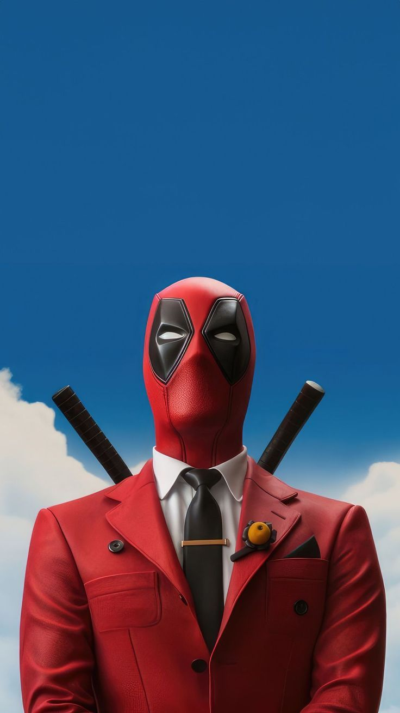

Deadpool (Wade Winston Wilson) merupakan antihero fiksi yang muncul di komik Amerika Serikat yang diproduksi oleh Marvel Comics. Pertama kali diciptakan oleh Fabian Nicieza dan penulis Rob Liefeld, karakter ini muncul pertama kali di The New Mutants #98 cover-dated (Feb. 1991). Awalnya Deadpool digambarkan sebagai penjahat super ketika ia tampil di penampilan perdananya di The New Mutants dan kemudian di X-Force, tetapi telah berkembang menjadi peran antihero. Deadpool adalah tentara bayaran yang cacat dan tidak stabil secara mental dengan kemampuan super dari faktor penyembuhan cepat dan kekuatan fisik. Ia dikenal sebagai "Merc dengan Mulut" karena sifat latah dan kecenderungan untuk memecah dinding keempat, yang digunakan oleh penulis untuk membuat efek lucu.
Link ke Halaman Lain 